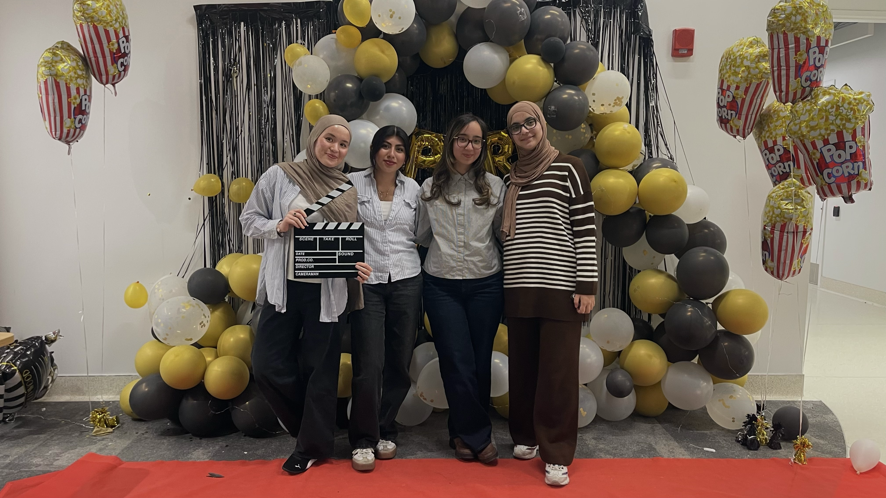
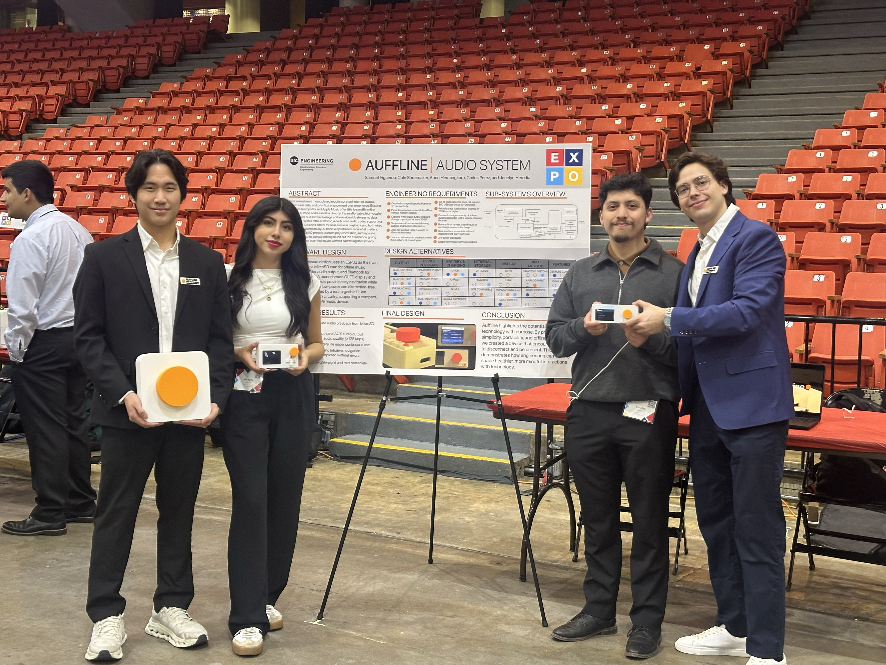

Projects
Made with purpose.
A selection of engineering and design work.

Computer Engineering · Senior Design
Auffline
An embedded offline music player with a fully custom graphical UI built in C/C++ on a Teensy 4.1. Features file explorer, playlist management, album browsing, and playback controls music stored and accessed via SD card over USB MTP. Presented at UIC EXPO 2026 — Top 5 of 31 teams & Best Table for Senior Design.
C/C++Teensy 4.1 / ESP32UI Desgin
🧠
Software · Data
Medical Anomaly & Model Steering Studio
An interactive, human-in-the-loop machine learning tool for exploring clinical data. Instead of treating a model's output as a fixed black box, this app lets a user visually inspect flagged patients, correct the model's mistakes, and watch its decision logic update in real time.
Pythonscikit-learnMatplotlib
🖥️
Data
Job Market Pipelining
A full-stack data pipeline that extracts in-demand skills from job postings, stores them in a relational database, and visualizes the results in a live React dashboard.
PythonFlaskReact/Vite